証明書エラーのブラウザー比較
執筆日時：
たまたまブックマークを付けておいた古いページで証明書エラーが出たので、比較のスクリーンショットをとってみた。環境は Windows 10 Pro x64（JPN）。
Microsoft Internet Explorer 11
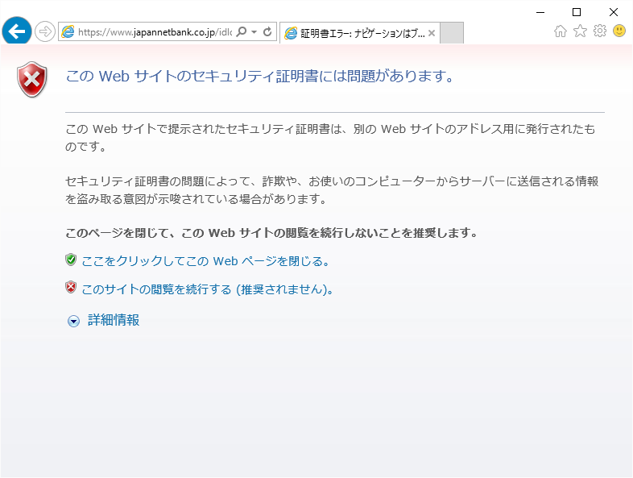
割りとお馴染な感じ。
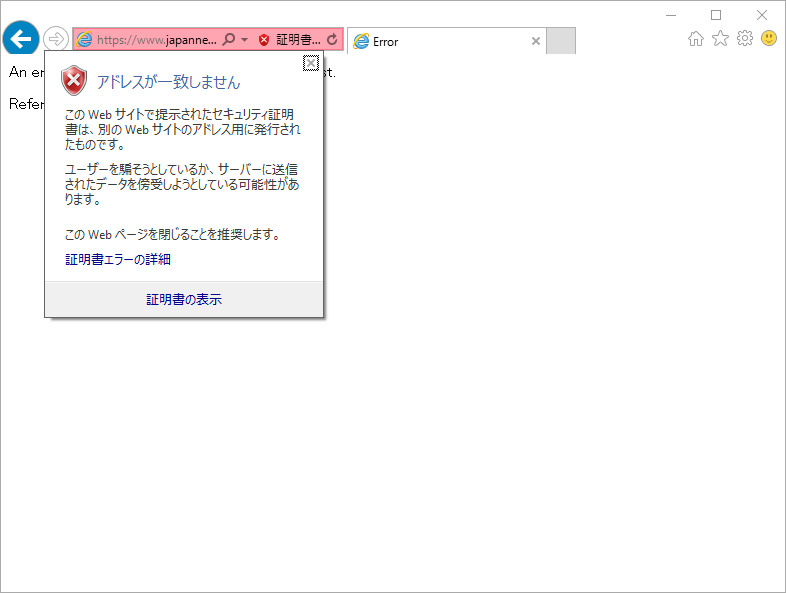
Microsoft Edge
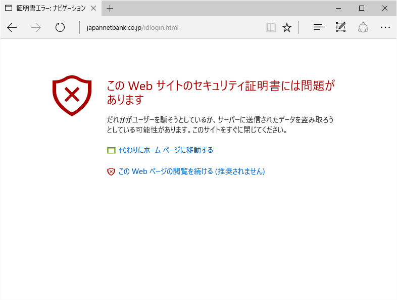
ちょっとドギツイ表示になってる気もする。
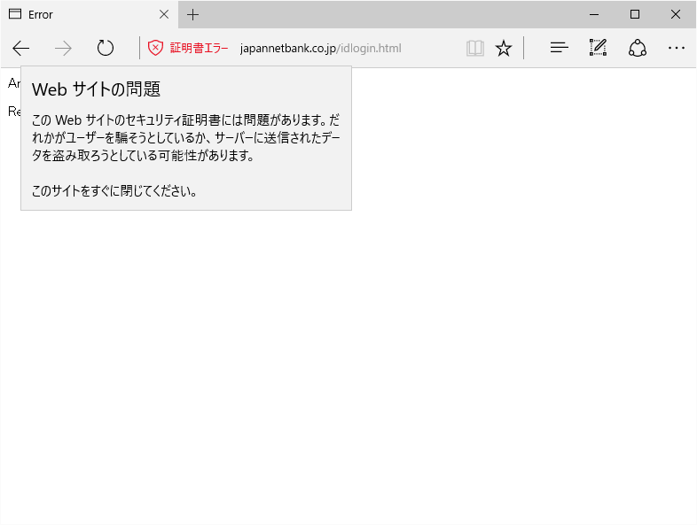
証明書を表示するユーザーインターフェイスがないような。
Google Chrome 49
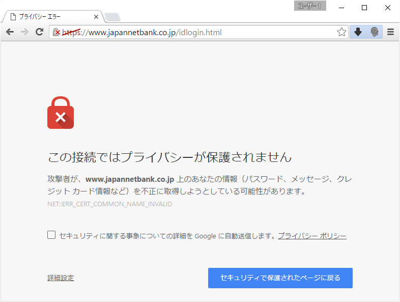
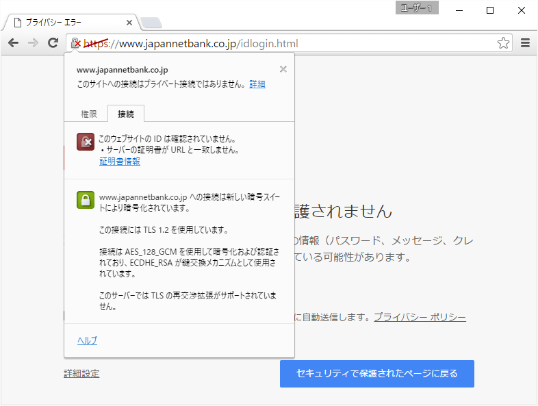
もっとも情報が詳細なのが Google Chrome かも。
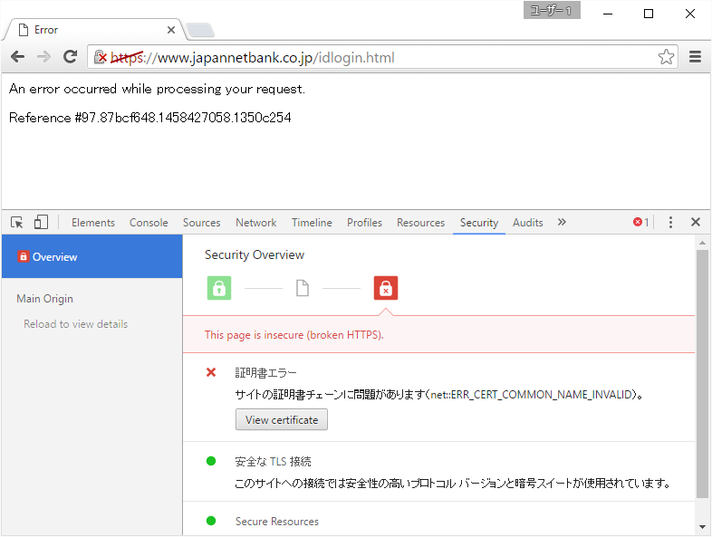
割と最近のバージョンでは開発者ツールでエラーの詳細をチェックできる。
Mozilla Firefox 45
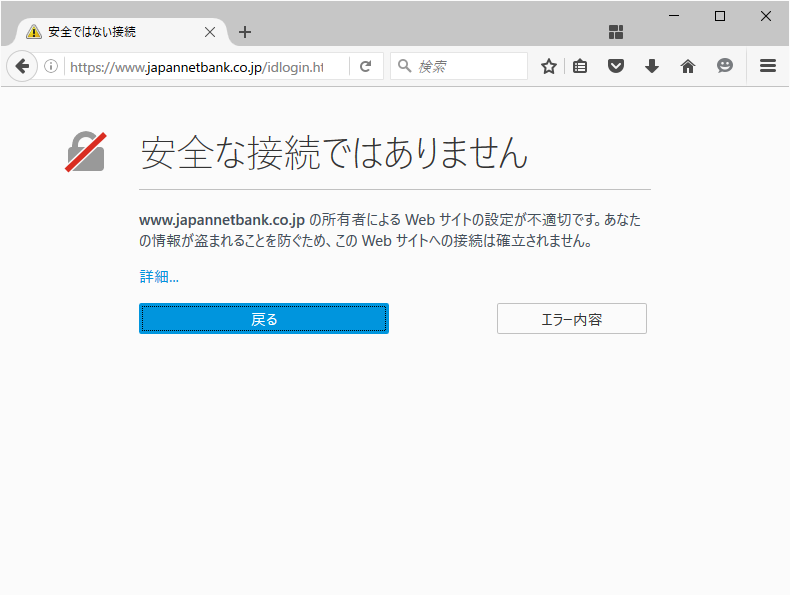
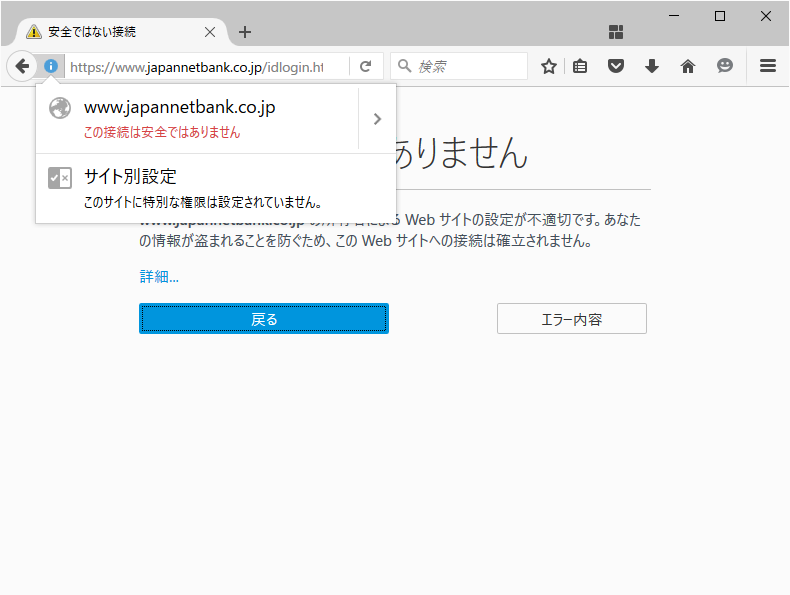
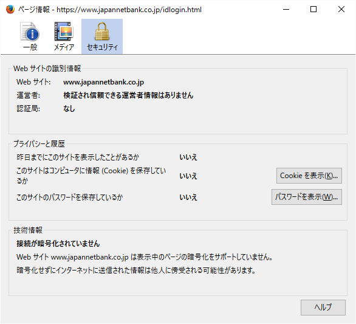
エラーの詳細はパネル＆ダイアログで。
Opera 36
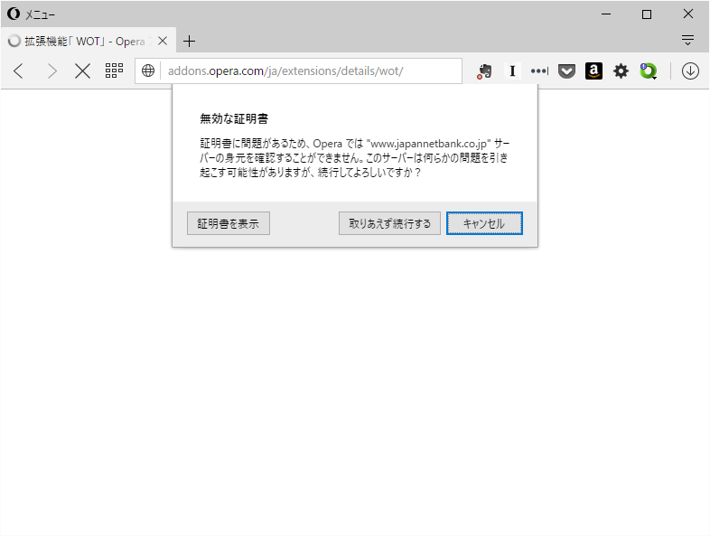
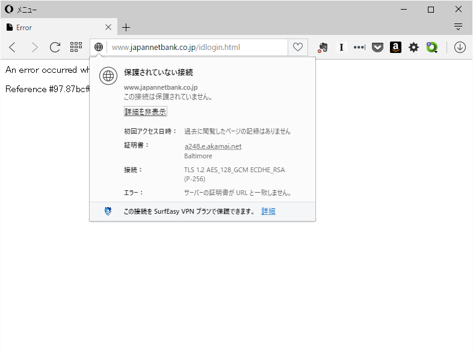
一番古臭い感じだけど不便は感じないかな。ちなみに Vivaldi は Google Chrome と似たような感じだったかも。